Note
This is a very early release of tcs-xtcee. Comments are very welcome, as are people interested in collaborating on it. Please open an issue or a pull request at https://github.com/vomlehn/tcs-xtce; the contributing guide, https://github.com/vomlehn/tcs-xtce/blob/main/CONTRIBUTING.md, says how.
tcs-xtcee is a graphical editor for XTCE documents. It holds a document to the XTCE version it is written in: XTCE 1.1, 1.2 or 1.3, each checked against the schema OMG published for it. It changes a document only where it is edited, so a file it saves differs from the file it opened only in what was changed: comments, blank lines, indentation, quoting and the order of attributes are kept as written, and a comment stays where it was put when the elements around it are edited, moved or deleted.
XTCE 1.0 is not one of the versions: its schema was published only inside its specification, never in a form a program can read.
make editor # builds it editor/target/release/tcs-xtcee FILE...
The tcs-xtce package installs it as /opt/tcs/bin/tcs-xtcee, already built, with the Python package it uses installed beside it.
The packet layout, the encode and decode window and the compiler's check use the Python package, as Running the compiler describes: from a checkout, run make generate first, or set TCS_XTCE_PYTHONPATH to the directory that holds tcs_xtce.
The editor holds each document to the schema OMG published for its XTCE version, and opens OMG's specification at an element. OMG does not allow either to be redistributed, so neither is built into the editor or packaged with it. Each is downloaded from OMG, with curl, the first time it is needed, and only once you have agreed:
The editor asks in a dialog, saying what is to be downloaded, from where and to where; Cancel downloads nothing and leaves the document unopened, and the status line says how to download the file yourself. The commands (From the command line) ask on the terminal, and without a terminal, as in a Makefile or a CI job, download nothing and stop, unless given --download.
What is downloaded is kept in ~/.local/share/tcs-xtcee/ ($XDG_DATA_HOME/tcs-xtcee if set), as xtce-1.3.xsd and XTCE-1.3.pdf (or 1.1, 1.2), so each is asked about once. A file you download yourself and save there under that name is used as it is. In a checkout, the editor uses the copies in references/ instead, which make test-editor fetches (make -C references editor), so that its tests need no network and ask nothing.
tcs-xtcee FILE... opens each file in a window of its own. The files given together are one mission (Missions in several documents): a reference in one can name a definition in another, and File > Open adds another document to the mission.
Each window shows:
The window's title names the file and its XTCE version, and starts with * while the document has changes that are not saved. The pictures in this manual are the editor's own windows, opened on the documents in examples/ and drawn by make screenshots.
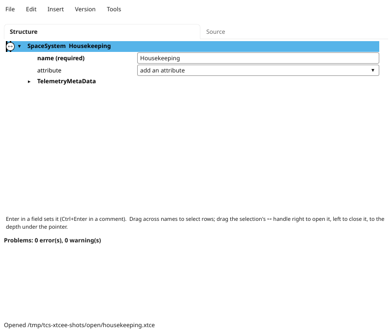
tcs-xtcee housekeeping.xtce: the root, SpaceSystem Housekeeping, is open and selected. Its attribute name is required; the row attribute offers the others it may have. Below the outline are the problems, none here, and the status line.
A click on a name selects its row, which the Edit and Insert menus act on; Ctrl+click adds a row to the selection or takes it out, and Shift+click selects every row from the selected one to it. Dragging across names selects every row dragged across, Ctrl added to those already selected; dragged past the top or the bottom, the tree scrolls, faster the further past the pointer goes.
The selection is marked by its rows' colour and by a line down the column where its topmost element starts, with a ↔ handle at the middle of the part of the line in view. Dragging the handle opens or closes every selected element, and everything in it, to the depth whose column the pointer is let go over; the line follows the pointer, and words beside it say what letting go will do. Dragged right, it opens each element less deep than that, so that the rows down to that depth are shown, and leaves open what is open. Dragged left, it closes each element as deep or deeper, so that none deeper is shown, and leaves closed what is closed. Elements outside the selection are not changed. The triangle beside a name opens or closes that element alone.
A first look round housekeeping.xtce, from the window it opens in: opening the outline a few levels at once, reading what the schema says of an element, and following a reference to what it names.
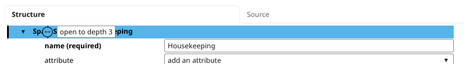
1. The ↔ handle of the selection, the root, dragged right: the words beside it say what letting go will do.
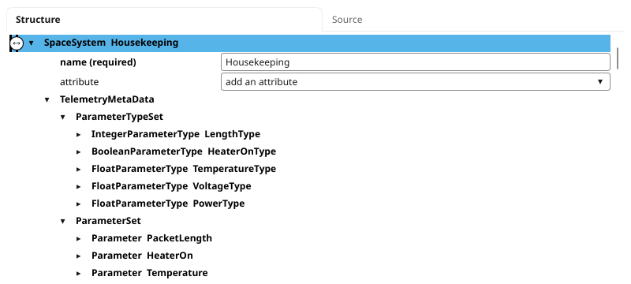
2. Let go, the selection is opened so that the rows down to depth 3 are shown: the root is depth 0, so the types and the parameters.
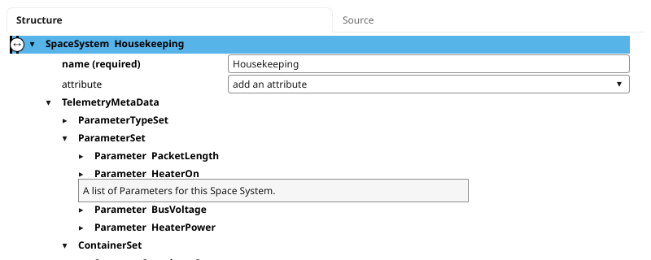
3. ParameterTypeSet closed with the triangle beside it, and the pointer resting on the name ParameterSet, which shows what the schema says of it.
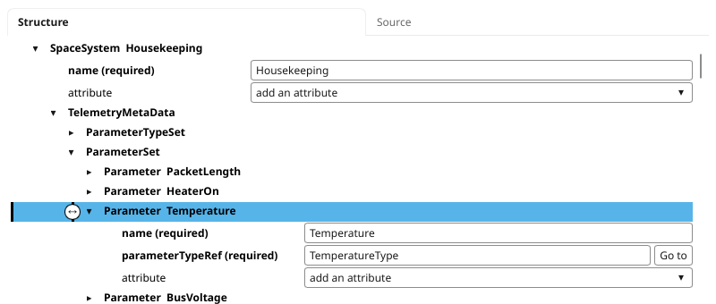
4. Parameter Temperature opened with its triangle and selected with a click on its name. parameterTypeRef is a reference, so it has a Go to button.
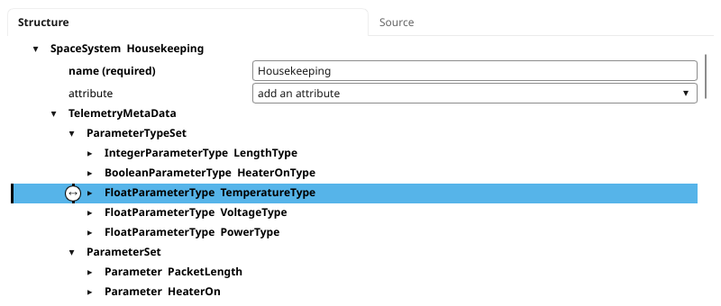
5. Go to selects the type the reference names, FloatParameterType TemperatureType, opening the rows above it.
An attribute's field is edited in place, and Enter sets it (Ctrl+Enter in a comment, whose Enter starts a new line); until then, nothing is changed. Setting it is a change, which is checked as every change is (Changes the version does not allow).
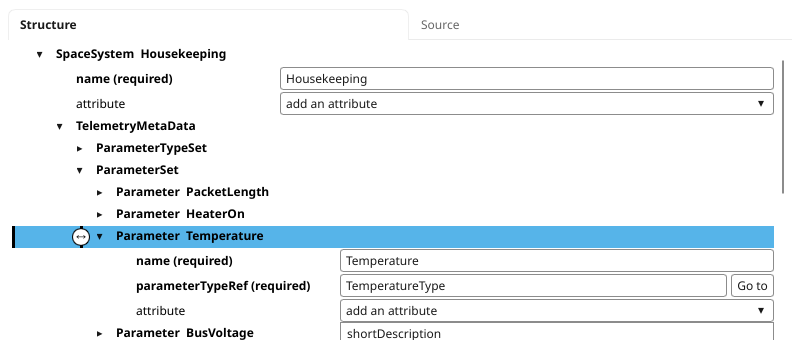
1. The list on the row attribute of Parameter Temperature offers the attributes the schema allows that it does not give.
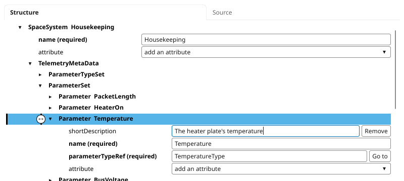
2. shortDescription chosen: an empty field for it, typed in.
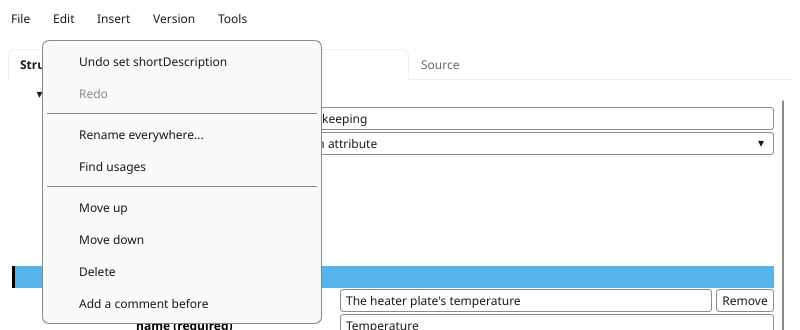
3. Enter sets it: the change is taken, and Edit > Undo names it. The attribute's name is now in bold, as the names of those the element gives are.
Every change is held to the document's version. An attribute set to a value its type does not allow, an element put where the schema does not allow it, a required element or attribute taken out, a source edit that breaks the schema: each is refused, the document is left as it was, and the status line says why and what the schema wants. A document opened with errors can be corrected a change at a time, but no change may make it worse.
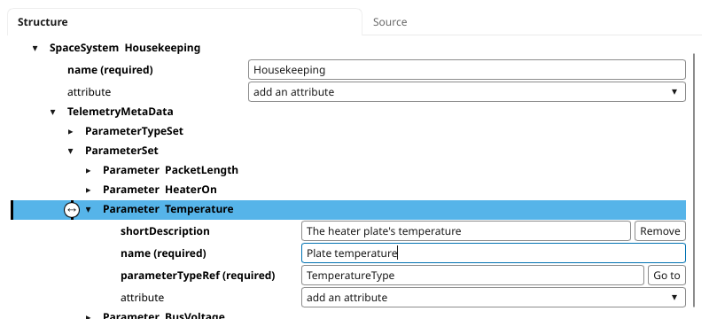
1. A name with a space in it typed into the parameter's name.
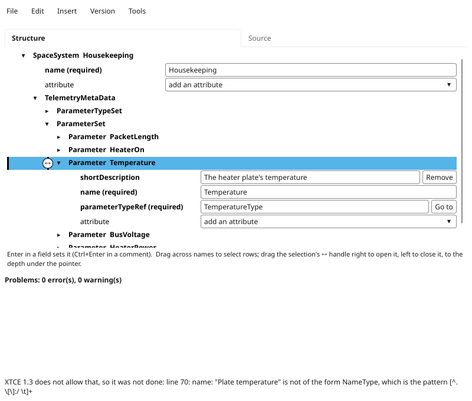
2. Enter: XTCE 1.3 does not allow a space in a name, so the change is refused. The field shows the name as it was, and the status line says why, with the pattern the schema's NameType requires.
So that nothing is ever put in half-made, Insert offers only the elements the schema allows in the selected element, and each is made complete: with its required attributes, each given a value of the right kind, and the fewest children that complete it. Ready-made parts are offered where they fit: integer, float and boolean types in a ParameterTypeSet, and in a SpaceSystem the six-byte primary header of a CCSDS space packet (CCSDS 133.0-B), with its types, its parameters and the abstract container a packet builds on.
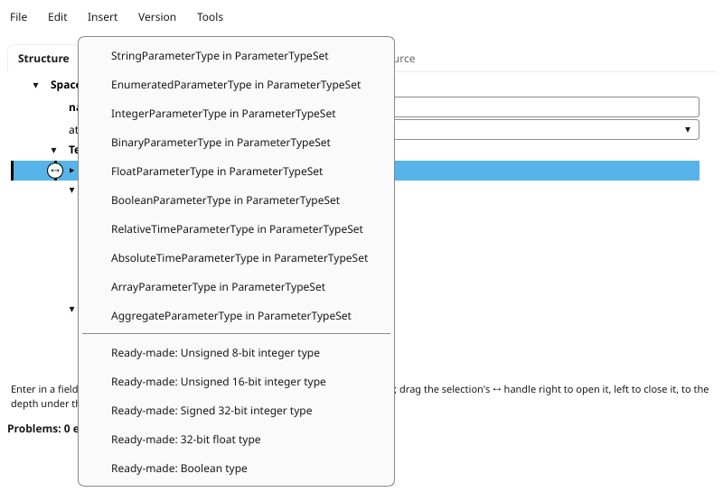
1. ParameterTypeSet selected: Insert lists what may go in it, and below them the ready-made parts that fit.
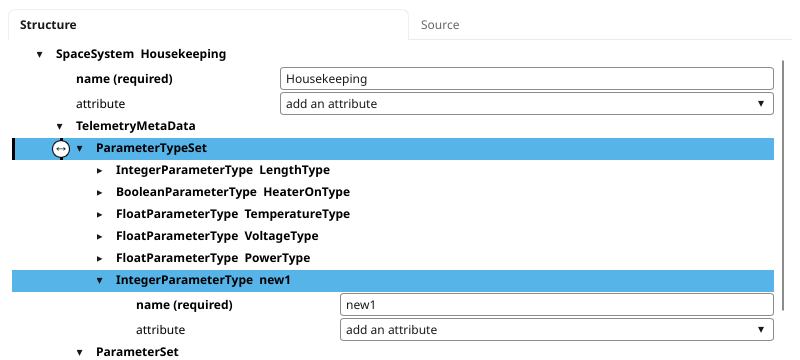
2. IntegerParameterType chosen: one is put in, complete, its required name given a value of the right kind, and selected.
The problems list is drawn again after every change, and a click on a problem selects the element it is about, opening the rows above it. The pictures are of a copy of housekeeping.xtce with two mistakes put in it: a coefficient that is not a number, and a parameter whose type is named PowrType, which nothing defines.
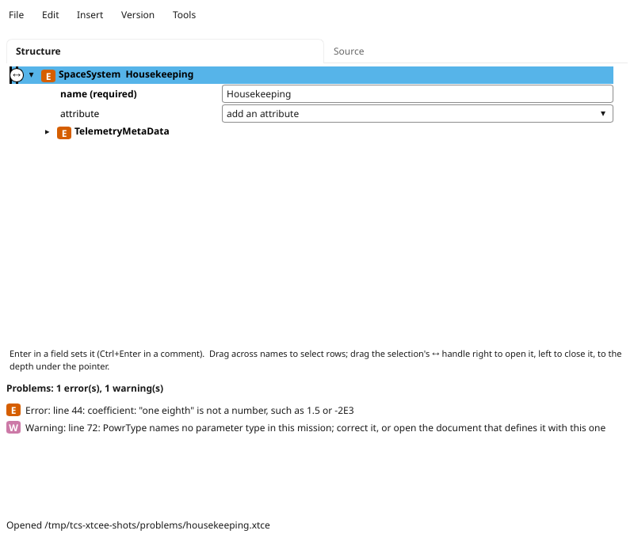
1. Opened: the list gives each problem with its line, an error marked E and a warning W, and every row above a problem carries the worse mark, closed or not.
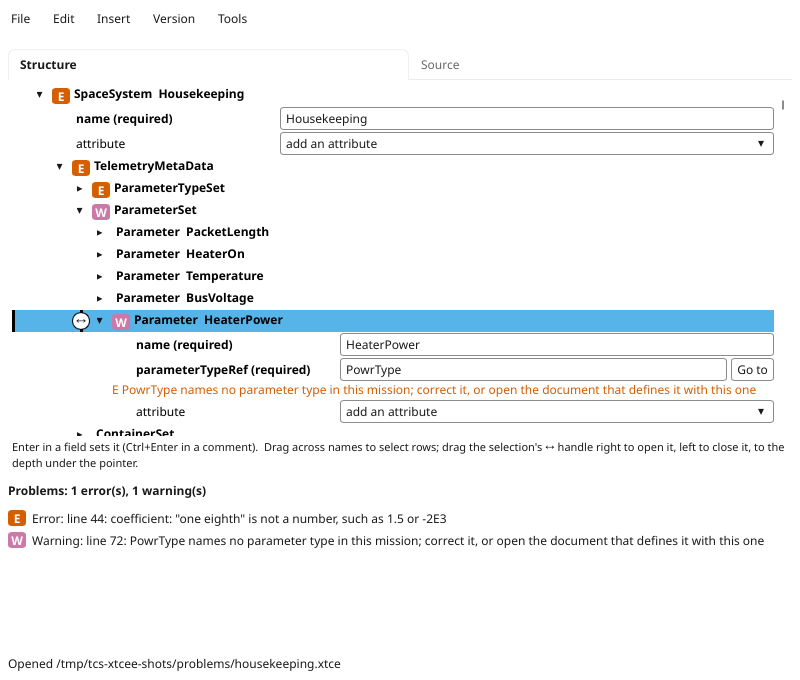
2. A click on the warning selects Parameter HeaterPower; opened, it shows the problem under the attribute it is about.
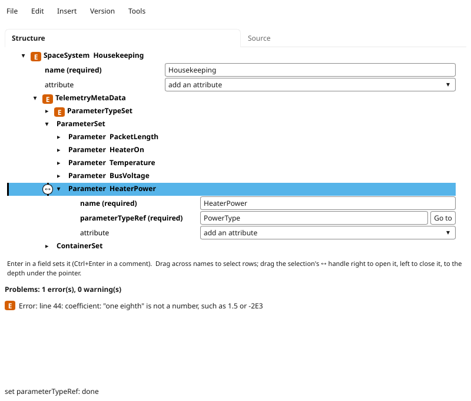
3. PowerType typed in its place and Enter pressed: the warning is gone, from the list and from the rows.
Edit > Undo and Redo name the change they undo or redo. Each document has a history of its own. A rename across documents -- Edit > Rename everywhere, which renames a definition and every reference to it in the open documents -- is one step in each document's history, and is undone in all of them at once, when it is the last change in each. The histories are kept only while the editor runs: they are gone when it is closed.
With autosave on, a changed document is written to its file two seconds after the last change. File > Autosave turns it off and on, and the setting is kept in ~/.config/tcs-xtcee/settings ($XDG_CONFIG_HOME if set). With it off, a changed document that has not been saved is kept in a recovery copy in ~/.local/state/tcs-xtcee/ ($XDG_STATE_HOME if set), so that a crash loses at most the last seconds; the next time the document is opened, the editor offers the copy's changes, which Undo then takes back if they are not wanted. Saving removes the copy.
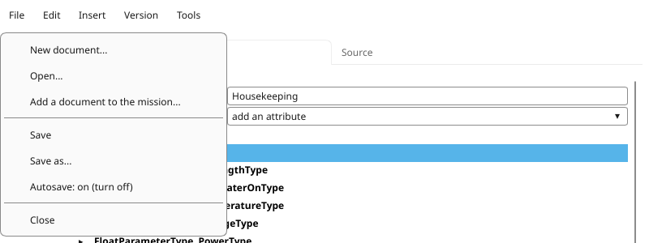
File > Save writes the document now; the item below Save as says whether autosave is on, and turns it off or on.
What happens to a change, from the check to the file.
A file is written whole or not at all: to a temporary file beside it, flushed, then renamed over it. A file changed on disk by another program -- git, another editor -- is noticed, and the editor asks whether to reload it, which Undo can undo, or keep its own version; it does not write over the other change until one is chosen.
Version > Convert to XTCE version converts the document to another version, a version at a time, as one change that Undo undoes. Before anything is changed the conversion dialog lists:
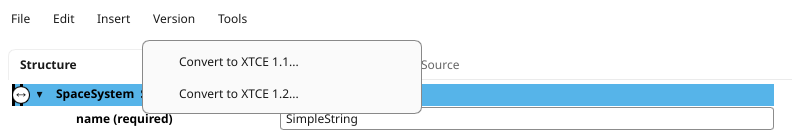
1. The Version menu offers the versions the document is not in; simple_string.xtce is in 1.3.
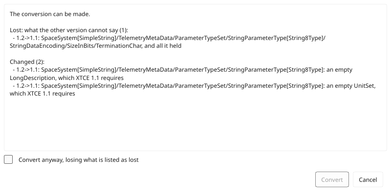
2. Convert to XTCE 1.1, by way of 1.2: 1.1 cannot say the string's termination character, so Convert waits for the box agreeing to lose it.
The rules come from comparing the three schemas element by element and attribute by attribute; the design describes them. A converted document is checked against its new version's schema before it is taken.
A mission in XTCE 1.1 or 1.2 is converted to 1.3 in memory for the compiler's tools, which read 1.3; its files are not changed.
The same checking and converting run without the windows, for a Makefile or a CI job:
tcs-xtcee check FILE... tcs-xtcee convert FILE --to 1.2 [--allow-loss] [--set KEY=VALUE]... [-o OUT] tcs-xtcee sample VERSION SEED
Each takes --download, which downloads a schema not yet on this machine without asking (OMG's files). check prints each problem as FILE:LINE: error: ..., and fails if there is an error. convert prints what it changed, lost, needs and refuses; it writes nothing if anything is refused or needed, or, without --allow-loss, if anything would be lost. Each need is printed with the --set that answers it. sample prints a random valid document of a version, which the tests use.
make test in the tcs-xtce checkout runs the editor's tests with the rest (make test-editor runs them alone): its documents, schemas, checker, conversions and windows, the windows drawn without a display. make editor-check holds the editor to xmllint: it makes random documents of every version, converts each to every other, and has xmllint judge every document made.
tcs-xtcee is part of tcs-xtce, and is licensed as it is: under either of the Apache License, Version 2.0 (LICENSE-APACHE, or http://www.apache.org/licenses/LICENSE-2.0) or the MIT license (LICENSE-MIT, or http://opensource.org/licenses/MIT), at your option.